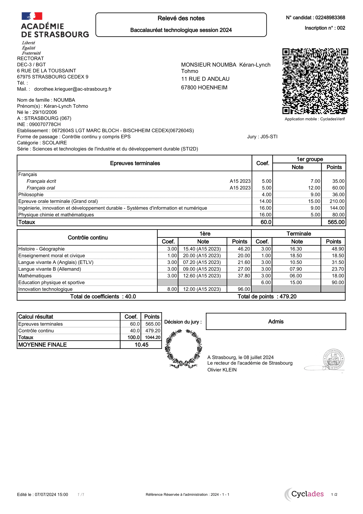

Baccalauréat technologique
Obtenu au Lycée Marc Bloch (2021-2024). Cette formation m'a permis d'acquérir des bases solides en sciences et technologies, avec un accent particulier sur les mathématiques appliquées, la communication en réseau et les sciences industrielles. J'ai participé à plusieurs projets académiques :
- Coordination logistique : Organisation des équipements techniques pour des projets académiques et événements.
- Mise en œuvre d'animations : Participation active à des présentations en groupe.
- Respect des normes : Application stricte des règles de sécurité et d'hygiène lors des travaux pratiques.
- Travail en équipe : Collaboration avec les autres étudiants pour gérer les imprévus et améliorer la dynamique de groupe.
Ces expériences m'ont aidé à développer des compétences en planification, communication et gestion collaborative dans un contexte éducatif exigeant.
Mon Baccalauréat :
BUT Réseaux & Télécommunications
En cours à l'IUT de Colmar (2024-2025), cette formation approfondit mes compétences en administration réseau, télécommunications et cybersécurité. Elle inclut des projets pratiques et des études de cas concrets :
- Configuration réseau : Mise en place de réseaux complexes pour répondre à des besoins spécifiques.
- Analyse des équipements : Organisation des équipements nécessaires aux configurations et aux tests.
- Respect des normes : Conformité aux règles de sécurité et aux protocoles en vigueur dans les environnements réels.
- Collaboration : Travail en équipe pour résoudre des problèmes complexes et améliorer les performances des systèmes.
Cette formation me prépare à devenir un professionnel compétent dans des environnements techniques exigeants et collaboratifs.